What is Laterball?
Love to watch football on demand? Laterball tells you which games are the best to watch this week without spoiling the score for you.
Currently, Laterball lists the best English Premier League games of the week, ranked by watchability.
Questions? Comments?
Form here